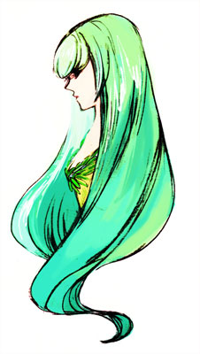

当年夏にご協力頂きましたアンケート回答より、「少女」にふさわしい姿や条件を以下に整理してみました。

容姿は「細い首」「肉の少ない手足」などから可憐で華奢な体躯を持ち、しかし「意志の強い瞳」「心を見透かすような瞳」などから、精神的には儚くなさそうなことが伺えます。
また、自然物に「花」や「若木」の瑞々しい喩えを得ながら、人工物では「ガラス」のように硬くも壊れやすいという相反するものに喩えられている、この矛盾は回答者の差だけではないと思うのです。
瑞々しさは若さそのまま、肢体も女性へと変わる伸びやかな時期であり、精神的にうつろいやすく定まりにくい反面、無垢ゆえに侵しがたいという印象が硬質な人工物に喩えられているのだと思います。
「少女」とセットで思いつくものに「処女」という回答もありましたが、処女性は一度侵されたら元に戻ることはないというところも、ガラスなどに喩えられる由縁かと思います。
そのほか回答者による差はあれど、「髪」「瞳」「体躯」「肌」に特別なこだわりがあることが伺えます。
また、根底にある条件は「思春期の年頃」「未発達である」「純潔である（何ものにも穢されない）」というものであると思います。
「少女像」制作の折には、これらの条件に留意しながら描き進めていきたいと思います。改めまして回答者の皆さま、ご協力有難うございました。
2007.7.13 (2007.9.4 修正)